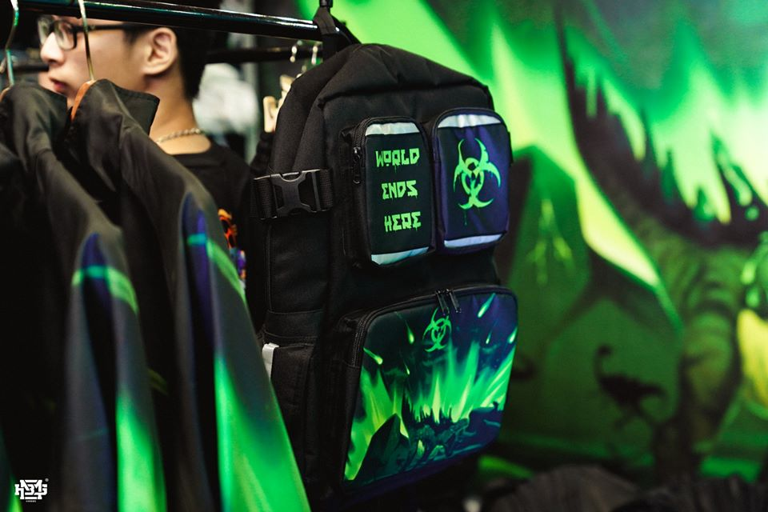

My profile
HOME
MEN
WOMEN
KIDS
NEWS
CONTACT

Previous
Next
Top 8 sports shoes trends are hot now and in the future Chunky Sneaker trend Chunky sneaker is a design that impresses strongly to sneaker fans in 2018. Chunky sneaker simply means big size shoes, thick soles and strong details ... designed based on Dad Shoes in the 70s. Recently, Adidas and Kanye have also launched their latest Yeezy versions with chunky designs. The product quickly gained significant attention from the Sneakerhead community and global fashion followers, promising to be one of the beautiful sports shoes.
Top 12 hot sneakers now Louis Vuitton - Archligh The first Chunky couple in the chart. Appearing at Fashion Week 2018, Louis Vuitton's Archlight is a sneaker that has really caught the attention. The oversize protruding base is raised for smoothness and flexibility when used. Thanks to the superior design, Archlight has led the luxury sneaker line.
Sole Ex - an event hosted by HNBMG, first held in 2016 has made a huge buzz and has also become an indispensable spiritual dish for the "top shoe" in all regions. country. Sole Ex 2019 - will be held on the coming November 24 at SVD Quan Khu 7, promising to be a good playground for people from the terrestrial culture in particular and fashion enthusiasts. general. But, what is Sole Ex so attractive?